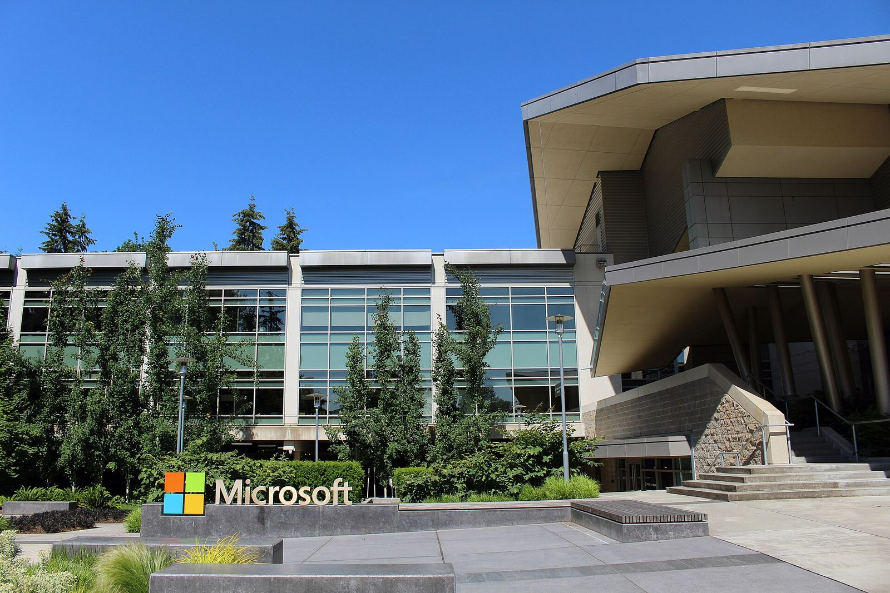

微软董事长兼首席执行官 Satya Nadella 在 Ignite 2026 开幕主题演讲中宣布：Microsoft-Decision-1.1 已普遍可用；推出代理式编程模型旗舰系列 Code 2 与 Code 2 Flash，即日起在 GitHub Copilot 与 Foundry 提供；并介绍安全模型 Cyber 2 Flash


微软董事长兼首席执行官 Satya Nadella 于 2026 年 11 月 17 日在旧金山 Ignite 发表开幕主题演讲。微软公司博客同日刊登了这篇演讲的编辑稿（edited remarks）。Nadella 在文中称，Copilot 是新的工作操作系统，使用方式包括 Chat、Cowork、Code 或 Autopilot；并提到 Work IQ，以及可多人协作的 Copilot Workspaces。他还宣布为商务应用推出新的插件，首先从 Dynamics 365 开始，并与 Salesforce 合作把 Salesforce 引入 Copilot；角色扩展涵盖销售、法律、财务与服务。关于 Microsoft IQ，文中写道，微软把 Copilot 底层系统作为一等平台向外提供，数据跨越 Fabric、Foundry 与 Microsoft 365，并宣布推出数以百计的新连接器。
今天我们很高兴宣布，Microsoft-Decision-1.1 现已普遍可用，可投入企业部署。
Nadella 说：“今天我们很高兴宣布，Microsoft-Decision-1.1 现已普遍可用，可投入企业部署。我们已加入多模态支持，并改进了性能，使决策更准确、响应更快。已有超过 4,000 家客户使用过该模型。”文中称，该模型可用于路由、数据标注、个性化、内容过滤等。他还表示：“我们非常高兴把 GPT 6.2 带到 Foundry。”并写道：“Meta 的最新模型也都将进入 Foundry。”博客还提到 MAI Licensed Weights：受信任的客户现在可通过 Frontier Co 获得 Microsoft AI 模型权重的访问。
关于新模型，Nadella 说：“今天我们要介绍许多新模型。但我尤其想强调其中两款。”其一是新的代理式编程模型旗舰系列 Code 2：“Code 2 在日常企业编码任务的成本-性能方面处于前沿。它擅长把代码推进到生产、深入调试、多文件实现、跨仓库推理以及用户界面，而成本只相当于前沿水平的一小部分。”其二是 Code 2 Flash，面向快速、高通量的工作，例如代码解释、定向编辑、常规修复和快速迭代；文中称其以低得多的成本提供接近旗舰的质量。这两款模型即日起在 GitHub Copilot 中普遍可用，既出现在模型选择器中，也作为 Copilot Fusion 的一部分，并同时在 Foundry 中提供。他还介绍安全模型 Cyber 2 Flash，称“这是我们迄今最有能力的安全模型”，是一款 flash 体量的模型，其性能领先于前沿模型，而每项任务的成本只相当于其中的一小部分；并提到正把 Cyber 2 与 Perception 集成。关于 Agent 365，他说：“我们在 Agent 365 中已经拥有超过 5,000 万个代理。”当天还宣布推出 Agent 365 Business Analytics。
微软 Source EMEA 页另就部分产品给出补充说明（以下内容出自该页，而非上述开幕演讲编辑稿）：与 Salesforce 的集成最初以预览形式提供，并带有超过 38 项预置销售能力；Microsoft Perception 现已普遍可用；Cobalt 200 虚拟机性能最高可提升 50%，预计将在今年年底前进入 23 个 Azure 区域。
来源
摘记，不是官方媒体。主题演讲中的产品宣布与引语均出自微软公司博客刊登的编辑稿；Salesforce 预览范围、Perception 普遍可用及 Cobalt 200 虚拟机的补充数字出自 Microsoft Source EMEA 页。未添加上述页面未出现的模型名称或评测名次。